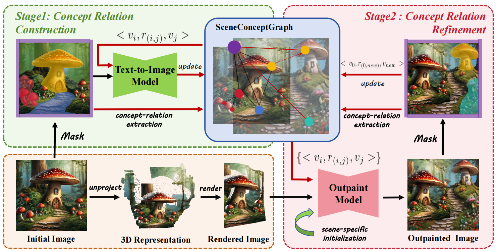
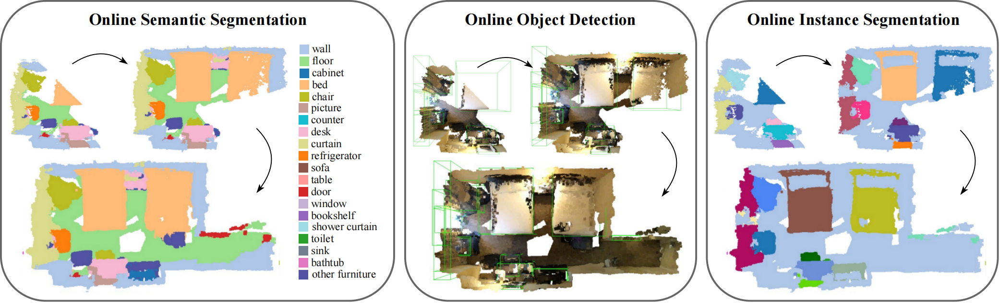

|
Chong Xia | 夏冲
I'm a first-year PhD student in the Department of Electronic Engineering at Tsinghua University , advised by Prof. Yueqi Duan. In 2024, I obtained my B.Eng. in the Department of Automation, Tsinghua University.
My research interest lies in 3D Vision and Embodied AI. If you are interested in working with me, please feel free to drop me an email.
Email /
CV /
Github
|
|
|
News
2025-06: One paper on World Generation is accepted by ICCV 2025.
2024-02: One paper on Embodied Perception is accepted by CVPR 2024.
|
|
Selected Publications
*Equal contribution †Project leader
|
|

|
ScenePainter: Semantically Consistent Perpetual 3D Scene Generation with Concept Relation Alignment
Chong Xia,
Shengjun Zhang ,
Fangfu Liu ,
Chang Liu,
Khodchaphun Hirunyaratsameewong,
Yueqi Duan
IEEE International Conference on Computer Vision (ICCV), 2025
[arXiv]
[Code]
[Project Page]
In this paper, we introduce a novel world generation framework, coined ScenePainter, to direct the iterative scene generation process with semantically consistent scene concepts and relations.
|
|

|
Memory-based Adapters for Online 3D Scene Perception
Xiuwei Xu* ,
Chong Xia*,
Ziwei Wang ,
Linqing Zhao ,
Yueqi Duan ,
Jie Zhou ,
Jiwen Lu
IEEE/CVF Conference on Computer Vision and Pattern Recognition (CVPR), 2024
[arXiv]
[Code]
[Project Page]
We propose a model and task-agnostic plug-and-play module, which converts offline 3D scene perception models (receive reconstructed point clouds) to online perception models (receive streaming RGB-D videos).
|
|